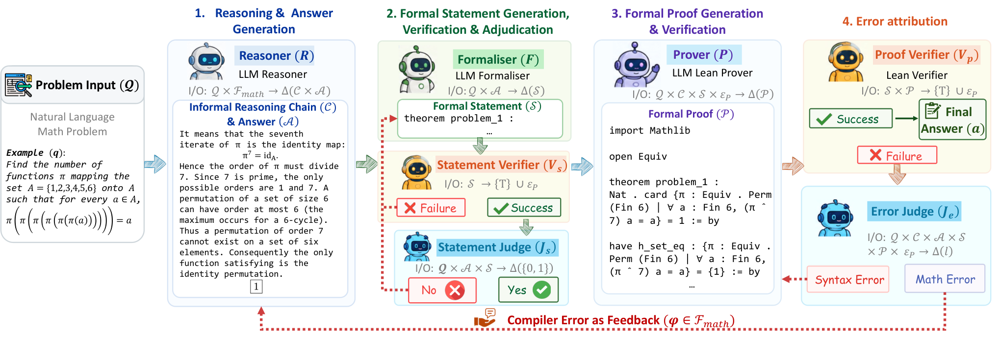

Presents Magenta, a training-free agentic pipeline that formalizes natural-language math problems into Lean 4 statements and constructs machine-checked proofs.
Abstract
Most of mathematical knowledge has been communicated through so-called informal use of mathematics and natural language. With large language models (LLMs) being highly adept in using natural language, they achieve strong performance, yet not perfect, in informal mathematical reasoning. Restraining LLMs to informal reasoning misses out on the opportunity to use the discrete verification abilities that machines offer through machine-checkable proofs. In this paper, we bridge the gap between informal and formal reasoning by integrating Lean signals into the informal reasoning process. We introduce Magenta, a training-free agentic pipeline that, given only a natural-language problem, produces an answer, expresses it as a Lean 4 statement, and constructs a machine-checked proof. A statement judge verifies whether the formalisation preserves the original problem, while an error-attribution judge routes failed attempts either to mathematical re-derivation or local Lean repair. Magenta achieves 100% accuracy across all evaluated olympiad benchmarks, including AIME 2025, AIME 2026, and HMMT February 2026. When paired with the open-weight K2-Horizon-7B reasoner, it solves all six IMO 2026 problems. Our analysis shows that statement adjudication is essential for preventing false certificates and that feedback-guided correction outperforms independent resampling on difficult problems.
Problem
LLMs excel at informal mathematical reasoning but their chains-of-thought contain errors, and learned judges are unreliable proxies for correctness. Existing formal-verification systems assume a human-written formal statement, ignoring the task of determining what a natural-language problem actually asks.
Approach
Magenta is a training-free agentic pipeline that, given a natural-language problem, produces a reasoning chain and candidate answer, formalizes it as a Lean 4 statement, and generates a machine-checked proof. A statement judge verifies that the formalization preserves the original problem, while an error-attribution judge routes failed proofs either to mathematical re-derivation or local Lean repair. Proofs are checked with Lean v4.29.1 and Mathlib under SafeVerify, using components like Goedel-Formaliser, DeepSeek judges, and Leanstral or Codex provers.

Figure 1: Overview of Magenta . The pipeline maps a natural-language problem to an informal solution and candidate answer, a faithfully adjudicated Lean 4 statement, and a machine-checked proof. The illustrated example is taken from AIME 2026, where the initial reasoning incorrectly derives \pi^{7} instead of the correct expression \pi^{6} . Rejected formal statements are resampled, while failed p
Results
Magenta achieves 100% accuracy across AIME 2025, AIME 2026, and HMMT February 2026 with four different reasoners, and with the open-weight K2-Horizon-7B reasoner solves all six IMO 2026 problems. Statement adjudication eliminates false certificates (FCR 0% with judge vs 45.5% without), and feedback-guided correction outperforms independent resampling.
Model
AIME 2025
AIME 2026
HMMT Feb. 2026
Overall
K2-Horizon-7B
83.33
80.00
60.61
74.19
+ Magenta
100.00
100.00
100.00
100.00
Qwen3.8-27B
100.00
86.67
87.88
91.40
+ Magenta
100.00
100.00
100.00
100.00
Accuracy across olympiad benchmarks with and without Magenta